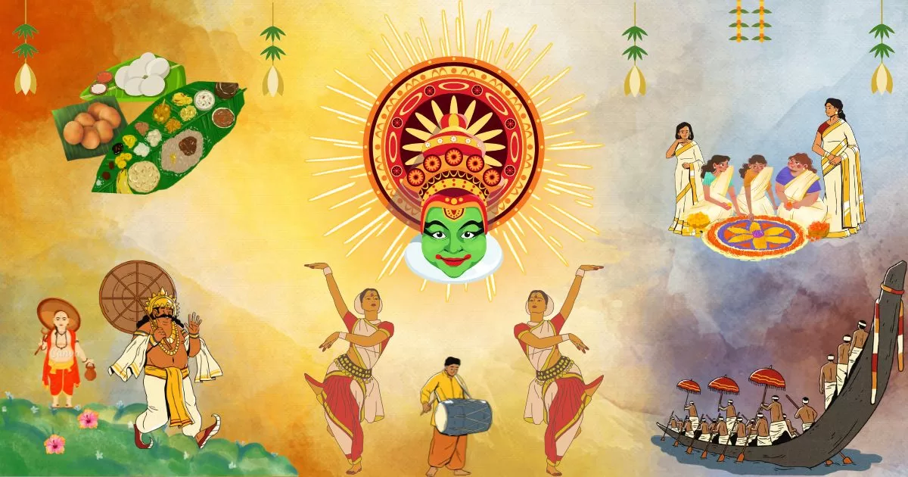

Onam is an annual harvest and Hindu cultural festival celebrated mostly by the people of Kerala and is traditionally associated with the legend of the benevolent Asura King Mahabali, who once ruled Kerala, returning each year to visit his people. A major annual event for Keralites, it is the official festival of the state and includes a spectrum of cultural events.
